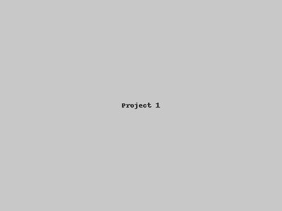

Control and Automation Engineer | Developer
Focused on Python and MATLAB. Develops algorithms for control systems and data analysis. Experienced with NumPy, SciPy, scikit-learn, python-control, CVXPY.
A Python code for designing PMR controllers and current feedback gains for UPS systems.
A Python code for designing discrete-time PMR controllers and current feedback gains for UPS systems.
A Python code for designing robust PMR controllers and current feedback gains for UPS systems.
A MATLAB code to compute a state-feedback gain for MIMO systems.